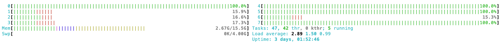
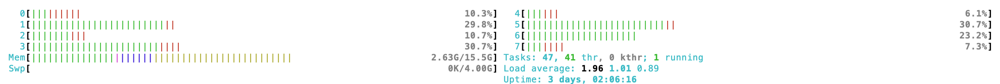
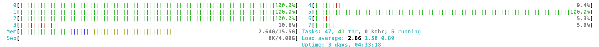

Docker
|
Container Resources
-
CPU Resources
The "docker container run" command has few options that allow you to determine the CPU resources that you want that Docker allocate to a container:
-c, --cpu-shares int CPU shares (relative weight) --cpus decimal Number of CPUs --cpuset-cpus string CPUs in which to allow execution (0-3, 0,1)To check the CPUs available in your machine, you can run the lscpu command or view the content of the file /proc/cpuinfo.
We will use the stress command which is a good tool to generate CPU stress on the system.
Let's first try to use a container without any limit on CPU resources:
$ docker container run --rm -it ubuntu:latest \ /bin/bash -c "apt-get update -y && apt-get install stress -y && stress --cpu 4 --timeout 15"
You can use the htop command to check the resources usage:

As requested, 4 CPUs are used at their full capacity.
To restrict the CPUs usage for a container, we can use the option --cpus which takes a value between 0.01 and the number of CPUs available on the Docker host. For example, to restrict the container to 1.00 CPU usage we can do the following:
$ docker container run --rm -it --cpus 1.00 ubuntu:latest \ /bin/bash -c "apt-get update -y && apt-get install stress -y && stress --cpu 4 --timeout 15"
The load might still be split on the available CPUs but Docker will ensure it won't go beyond the number defined by the option --cpus:

It's possible to decide in which CPUs to allow the container execution by using the option --cpuset-cpus:
$ docker container run --rm -it --cpus 1.00 --cpuset-cpus 0,7 ubuntu:latest \ /bin/bash -c "apt-get update -y && apt-get install stress -y && stress --cpu 4 --timeout 15"
This should limit the container to execute on CPU 0 and 7 only:

Another way, less recommended, to limit the CPU usage by a container is to use option --cpu-shares. The number given represents the CPU shares (relative weight) of CPU time the container receives. The logical maximum value that can be given is 1024 (default), which represents the full share of CPUs (values above 1024 won't provide additional benefit in most scenarios). Docker will allocate CPU time proportionally based on the ratio of the CPU shares between running containers. If one container has 1024 CPU shares and another container has 512, they both get executed the same number of times but the first container will receive twice CPU time as the second container when both are competing for CPU. Note, if only one container is running and has only 1 share, it will still use all CPU time, if no other process is using CPU.
To restrict the CPU shares for a container to 128 (1/8th of 1024):
$ docker container run --rm -it --cpu-shares 128 ubuntu:latest \ /bin/bash -c "apt-get update -y && apt-get install stress -y && stress --cpu 4 --timeout 15"
Even though we instructed Docker to allocate 128 CPU shares, the container was actually using 100% of 4 CPUs (from 8 CPU available on the Docker host). Docker won't prevent a container from using CPU resources (CPU time) unless there are other processes that are also requesting CPU resources.

-
Memory Resources
The "docker container run" command has few options that allow you to determine the CPU resources that you want that Docker allocate to a container:
-m, --memory bytes Memory limit --memory-swap bytes Swap limit equal to memory plus swap: '-1' to enable unlimited swapThe memory can be set in bytes (b), kilobytes (k), megabytes (m), or gigabytes (g).
We will use the stress command which is a good tool to generate memory stress on the system.
Let's use the option -m (--memory):
$ docker container run --rm -it --memory 1024m ubuntu:latest \ /bin/bash -c "apt-get update -y && apt-get install stress -y && stress --vm 1 --vm-bytes 256M --timeout 15"
Note that running the free -m command inside a container returns the host's memory, not the container's memory limit. Same if you look inside the /proc/meminfo file. If you want to check the memory limit defined in Docker, you can use the docker container stats command.
Open a new terminal window and run the docker container stats command (make sure the container is still running):
$ docker container stats
CONTAINER ID NAME CPU % MEM USAGE / LIMIT MEM % NET I/O BLOCK I/O PIDS 65d6d760949a jolly_hodgkin 101.25% 247.8MiB / 1GiB 24.20% 31.8MB / 521kB 0B / 0B 2
Let's now use the option --memory-swap:
$ docker container run --rm -it --memory 896m --memory-swap 1024m ubuntu:latest \ /bin/bash -c "apt-get update -y && apt-get install stress -y && stress --vm 1 --vm-bytes 256M --timeout 15"
Let's check the memory usage
$ docker container stats
CONTAINER ID NAME CPU % MEM USAGE / LIMIT MEM % NET I/O BLOCK I/O PIDS 8cfb41ecb285 jolly_blackwell 100.31% 272.1MiB / 896MiB 30.37% 31.8MB / 536kB 0B / 0B 2
You will get an error if the value of the --memory is large than --memory-swap. The --memory-swap value represents the total memory limit (RAM + swap).
docker: Error response from daemon: Minimum memoryswap limit should be larger than memory limit, see usage
To prevent the container from using swap space, set --memory-swap equal to --memory. This limits total memory (RAM + swap) to the memory limit alone.
To enable the container to use the full swap memory available in the docker host set --memory-swap to -1.
If you don't set --memory-swap, Docker sets it by default to twice the --memory value. Which means the swap space available will be equal to the memory limit. The container's memory limit will be equal to the sum of the memory limit and the memory limit of swap space.
Note that the memory limit is hard limit, meaning that the container will be killed (Out of Memory (OOM) Killer) if it tries to use more memory than what it was allocated. Let's use the stress to use more memory than the limit allocated to the container:
$ docker container run --rm -it --memory 256m ubuntu:latest \ /bin/bash -c "apt-get update -y && apt-get install stress -y && stress --vm 1 --vm-bytes 1024M --timeout 15"
stress: FAIL: [1] (425) <-- worker 158 got signal 9 stress: WARN: [1] (427) now reaping child worker processes stress: FAIL: [1] (431) kill error: No such process stress: FAIL: [1] (461) failed run completed in 0s
To check the out of memory, you can open a new terminal window and run the docker system events command (should be ran before starting the container):
$ docker system events
container create d29... (image=ubuntu:latest, name=beautiful_lehmann, ...) container attach d29... (image=ubuntu:latest, name=beautiful_lehmann, ...) network connect 2c8... (container=d29..., name=bridge, type=bridge, ...) container start d29... (image=ubuntu:latest, name=beautiful_lehmann, ...) container resize d29... (height=45, image=ubuntu:latest, name=beautiful_lehmann, width=181, ...) container oom d29... (image=ubuntu:latest, name=beautiful_lehmann, ...) container oom d29... (image=ubuntu:latest, name=beautiful_lehmann, ...) network disconnect 2c8... (container=d29..., name=bridge, type=bridge, ...) container die d29... (execDuration=4, exitCode=1, image=ubuntu:latest, name=beautiful_lehmann, ...) container destroy d29... (image=ubuntu:latest, name=beautiful_lehmann, ...)
You can also use the dmesg command to check the out of memory:
$ dmesg
[310591.464046] oom-kill:constraint=CONSTRAINT_MEMCG,...,task=stress,pid=18997,uid=0 [310591.464148] Memory cgroup out of memory: Killed process 18997 (stress) total-vm:1052200kB, ...
You can allocate more memory to the container than is physically available on the host if swap is available. In such cases, when the container requires more memory than what is currently available in RAM, the operating system will use swap space on the hard drive as temporary storage. This may lead to performance degradation or container termination if memory is exhausted.